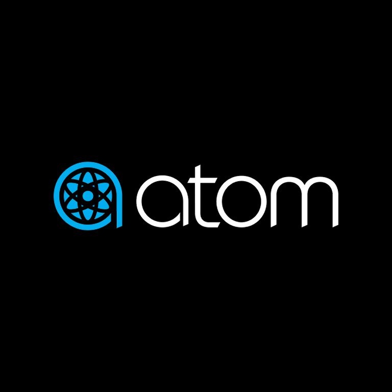
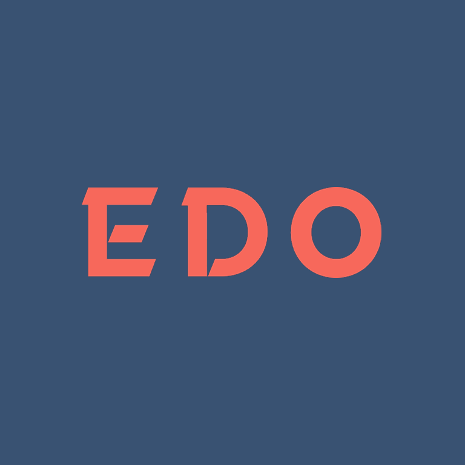
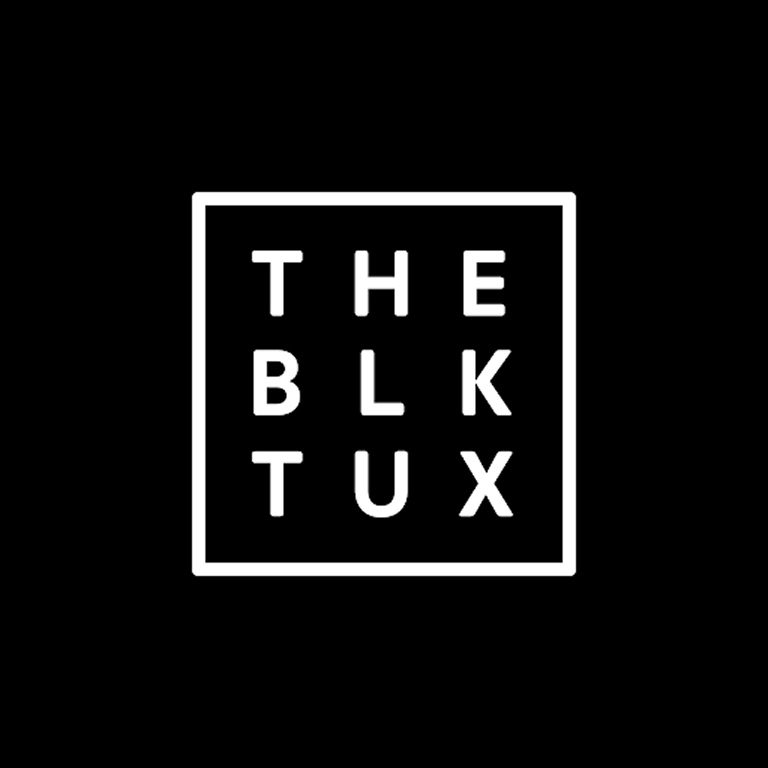
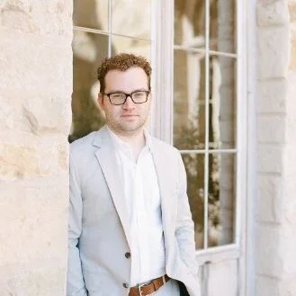

01 — SigmaSight
IA and a design system for trial‑risk analytics
As first product designer, defined the information architecture and built the design system an AI legal‑tech platform now scales on.
0→1
Design foundation the platform builds on today
Two decades shipping consumer marketplace, e‑commerce, and SaaS/analytics products from first concept to scale. I build and lead design teams, establish design systems, and drive full redesigns measured in conversion, retention, and revenue — not just craft.
As first product designer, defined the information architecture and built the design system an AI legal‑tech platform now scales on.
Led 5 designers through a focused initiative on the trust signals across listings and the path to purchase on the resale marketplace.

Led a 13‑month, iOS & Android redesign of the movie‑ticketing app — from root‑cause research through every shipped screen.

Rebuilt the query‑control system for a TV‑analytics platform so pre‑configured views and adaptive filters could scale with the product.

As Head of Product Design, led a team of three through a funnel rebuild spanning decision architecture, funnel mechanics, and party building.
I came to product design through writing, linguistics, architecture, and fine arts — a background that shows up as a bias toward clarity, systems thinking, and a strong point of view. Before design, I taught for eight years and edited for four.
Across twenty‑plus years I've led design at consumer marketplaces, e‑commerce, and analytics SaaS: setting strategy with the C‑suite, building and mentoring teams, standing up design systems, and running research that changes what gets built. I'm looking for Director and Principal roles where design is measured by the business it moves.
I loved his design process — the best I have worked with in my professional career. He strikes a great balance between exploration and execution. Ryan is a person I would love to work with again in any capacity.

A true systems designer, Ryan was able to help me and the engineering team build usable and delightful solutions for our users — helping folks not only understand what they wanted but why they wanted it.
A super talented design leader with an ability to communicate and align teams around solving hard problems. He asks great questions to get to a solid understanding of mental model and UX which produce the right UI solutions.
His design work was fantastic — even when sketched on a bar napkin — but it was his wisdom and insight that we appreciated the most. The most common solution to the problems we encountered was a phone call to Ryan.